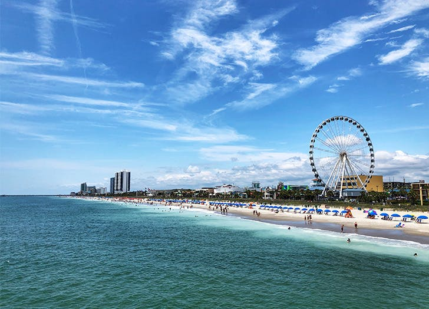

Get your dose of vitamin sea
From the top of Sandy Hook to the tip of Cape May Point, 130 miles of New Jersey beaches are summoning you to their shores. Soak up the sun on stretches of soft sand as far as the eye can see. Bask in the good times on natural barrier islands. And tackle adventures on land and water along glistening back bays. “Down the Shore” means something special to each of us and our NJ beaches are open to all the possibilities. Whether you seek the glitz of Atlantic City, the picturesque Victorian charm of Cape May, the family-friendly fun of Point Pleasant, the edgy vibe of Asbury Park, the Doo-Wop energy of The Wildwoods or the pure serenity of Stone Harbor, there is a beach just right for your mood and a perfect patch of sand for your favorite beach blanket.